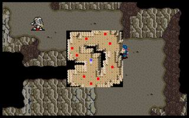

第七章 试练

 雷特
雷特
本关敌人：
 LV10 黑龙王 （HP800,AP270,DP187,HIT120,EV30,MV4,灵疗术）
LV10 黑龙王 （HP800,AP270,DP187,HIT120,EV30,MV4,灵疗术）
LV5 ��尸兵x8 （HP300,AP145,DP73,HIT100,EV10,MV4）
胜利条件：支持8回合
失败条件：雷特死亡
战后加入：
 LV8 骑士 莱特 （HP420,AP170,DP60,HIT116,EV39,MV8,长戟,锁子甲）
LV8 骑士 莱特 （HP420,AP170,DP60,HIT116,EV39,MV8,长戟,锁子甲）
战后报酬：
$2500G/$7500G
攻略简要：
此关有两种获胜的方法，第一种是支持八回合，不然就是八回合内雷特阵亡，不同的过法会给后面的剧情相当大的影响，雷特要阵亡并不难，一开始往黑龙王那里冲过去就对了(除非雷特等级在王子6级以上，不过也有可能有误差)，所以在此不多做解释，如果是要支持八回合，一开始往反方向跑，最好可以不被黑龙王追到，强烈建议此关雷特最差一刀也要有1百多滴，如果此关雷特不到15级，可以考虑找左边的角落，如下图：
僵尸
墙壁雷特僵尸
墙壁
这样的话，黑龙王就打不到雷特了，而且还会帮僵尸兵补血，雷特只要一直休息就行了。
战后商店道具:
武器： |
防具： |
道具： |
剧情对话：
索尼克:现在你一个人进入这个山洞。要是能依靠自己的力量，安然地通过山洞，并走到另一个出口的话，便算是通过试炼了。
雷特:这山洞内有什么东西吗?
索尼克:这是幻影洞窟，里面会出现各种幻影，以迷惑进入洞窟的人，使其无法自拔而永远陷在洞窟之中。若你真的想复国的话，就得破除这种阻碍。
雷特:是!我一定会通过这项考验的!
幻影:雷特!你是雷特吗?
雷特:难道这是幻影?但是如此地真实...
幻影:傻瓜!说什么蠢话!我是你大哥雷伊啊!
雷特:这...这不是幻觉?而且我从他身上感到一种莫名的亲切感...
幻影:我和你一样都是进入这幻影洞窟来接受考验的。可能是圣者没告诉你吧!过来一点，让我们好好聊一聊。
雷特:...不对!大哥和我离散了十多年，怎么可能认得出我!你到底是谁?
幻影:...嘿嘿嘿...不愧是雷特王子!我乃黑龙王，是哈奇大帝派我来除掉你的!
雷特:黑龙王!据说是哈奇直属最强的魔法战士!你竟然假扮我大哥来欺骗我，方法也太卑劣了吧!
幻影:哼!卑劣?...伟大的黑暗之力啊!听我的请求，将你的仆人供我差遣吧!
雷特:咦!从地底下冒出来好几个士兵...
幻影:呵呵呵...这是我用咒法召唤出来的僵尸兵，它们可是相当彪悍的死灵战士，你能应付得了吗?
雷特:废话少说，来吧!
与黑龙王和他的僵尸兵战斗。
索尼克:雷特你醒了吗?
雷特:哦...我...不是在和黑龙王战斗吗?怎么...在山洞外面了?
索尼克:只要你能维持一段时间不被幻影所击败的话，就算是通过考验了。你所谓的黑龙王可能只是个幻影。
雷特:但...但是那么地真实，而且又有一种令人似曾相识的感觉...
索尼克:这就是幻影洞窟的厉害之处。它所产生的幻觉，不是你目前认为最亲近的人，就是潜意识中最惧怕遇见的敌人。因为这两者的幻觉，最容易让人因为欢喜或恐惧，而导致精神某方面的脆弱，它才容易趁机而入。
雷特:那...难道是黑龙王算是我潜意识中最惧怕的敌人吗?
莱特:请等一下，你是否就是前来接受试炼的雷特王子?
雷特:我正是雷特。你是...?
索尼克:他是一般人所称的梦幻骑士--莱特，也是为了追求更高深的境界，前来幻影洞窟接受考验的。
莱特:不过我曾经进入洞窟好几次，都幸亏圣者设法相救，才能侥幸脱险，否则就得永远困在洞窟内了。看样子雷特王子已经通过洞窟的考验了?
索尼克:虽然他一出洞后便昏倒了，但是能凭一己之力脱出洞窟，也算是通过试炼了。
莱特:既然如此，那我就应该履行誓言了。
雷特:什么誓言?
莱特:当我第三次被圣者救出洞窟时，就立下了誓言，只要往后有人能通过幻影洞窟的试炼，我就认定他是一个真正的强者，并将跟随着他。
雷特:啊!这...
索尼克:雷特，你一心想复国的话，的确是需要许多人手来协助你的，莱特是个相当有能力的骑士，可别拒绝了。
雷特:既然如此的话，那往后可要多麻烦莱特大哥了。
莱特:殿下放心，我一定不会让你失望的。
第七章完